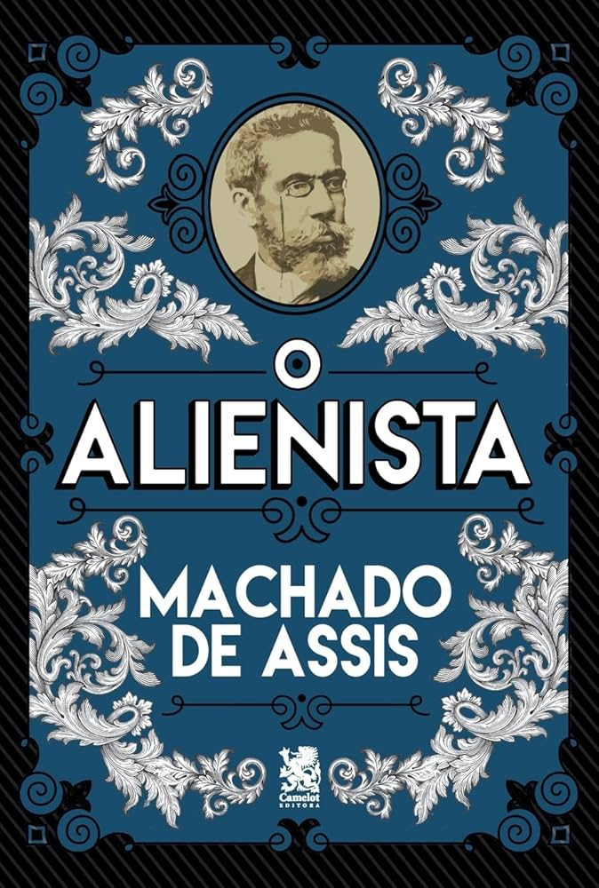
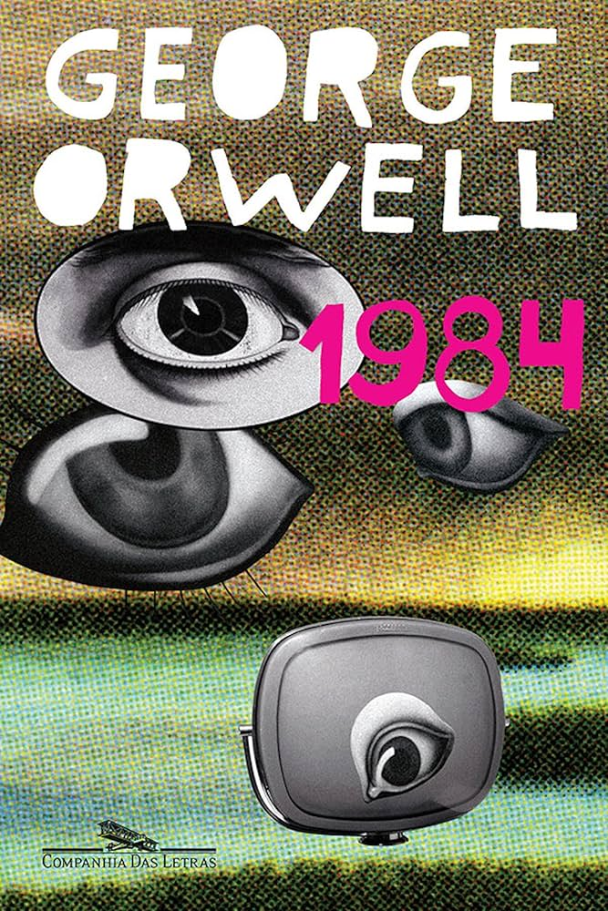
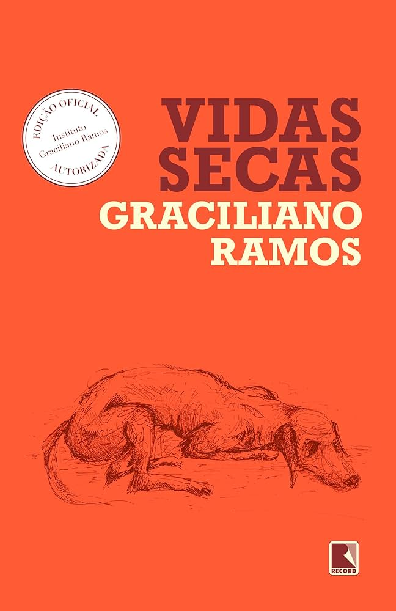
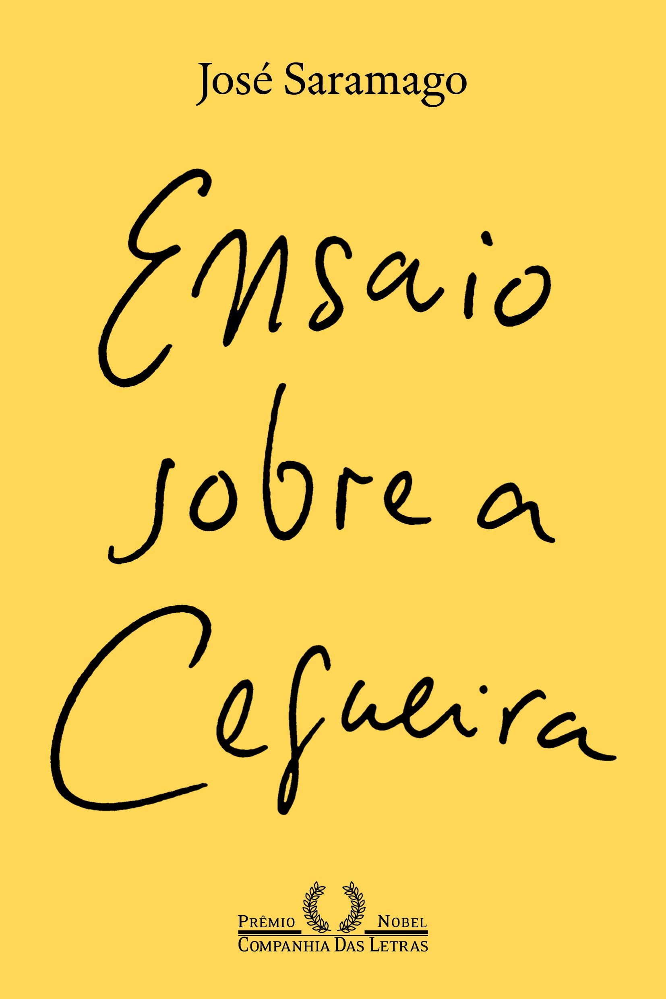

Repertórios
Conheça obras literárias que enriquecerão seu repertório

Quarto de Despejo: Diário de uma Favelada – Carolina Maria de Jesus
Neste diário real, Carolina Maria de Jesus, uma catadora de papel da favela do Canindé (SP), relata com crueza e sensibilidade sua rotina de miséria, fome e resistência. A obra é uma denúncia da desigualdade social no Brasil e dá voz a quem costuma ser silenciado.

O Alienista – Machado de Assis
O médico Simão Bacamarte decide isolar os "loucos" da cidade de Itaguaí em um manicômio chamado Casa Verde. Aos poucos, seu conceito de loucura se amplia até incluir quase toda a população. A obra é uma sátira sobre o abuso de poder, o autoritarismo e a tênue linha entre razão e loucura.

Capitães da Areia – Jorge Amado
Um grupo de meninos vive nas ruas de Salvador, cometendo pequenos crimes para sobreviver. A narrativa mostra como a falta de oportunidades e o abandono do Estado levam crianças a caminhos de exclusão e violência, refletindo as injustiças sociais da época — ainda atuais.

“1984” – George Orwell
Sinopse: Em uma sociedade totalitária, o governo controla pensamentos e informações, monitorando constantemente os cidadãos. O protagonista luta para preservar sua individualidade. Uso na redação: Para abordar liberdade de expressão, censura, controle de informações e a importância da democracia.

“Vidas Secas” – Graciliano Ramos
Sinopse: Narra a vida de uma família de retirantes nordestinos enfrentando a seca, pobreza e dificuldades do sertão brasileiro, mostrando a luta pela sobrevivência. Uso na redação: Para tratar de pobreza, seca, desigualdade regional e desafios sociais no Brasil.

“Ensaio sobre a Cegueira” – José Saramago
Sinopse: Uma epidemia de cegueira atinge uma cidade, e seus habitantes passam por situações extremas de desumanização e solidariedade. Uso na redação: Para refletir sobre solidariedade, ética, comportamento humano em crises e responsabilidade social.